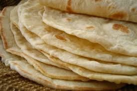

Flour Tortilla

This recipe for flour tortilla comes from a Garifuna woman in Belize that
has her own little diner in a local market. She is able to make small
balls of dough and toss them in the air several times until the dough is
perfectly round. It is quite the sight to see!
Ingredients:
- 3 cups flour
- 1 tablespoon shortening or butter
- 1 tablespoon baking powder
- 1 teaspoon salt
- 1 1/3 cup warm milk water or coconut milk
Steps:
- Mix the dry ingredients together.
-
Add in the shortening or butter and start working it into the dough by
hand until you get a nice crumbly consistency.
-
Slowly add in the liquid, you want the dough to be soft, not sticky.
-
Once you have the right consistency, knead the dough for 5 minutes.
-
Shape into small round balls about the size of a golf ball and allow it
to rest for 30 minutes.
- Form the tortillas, using a rolling pin or tortilla press.
- Heat a comal over medium heat.
- Flip when a few bubbles have formed.
- Enjoy hot off the stove!
Source
Home